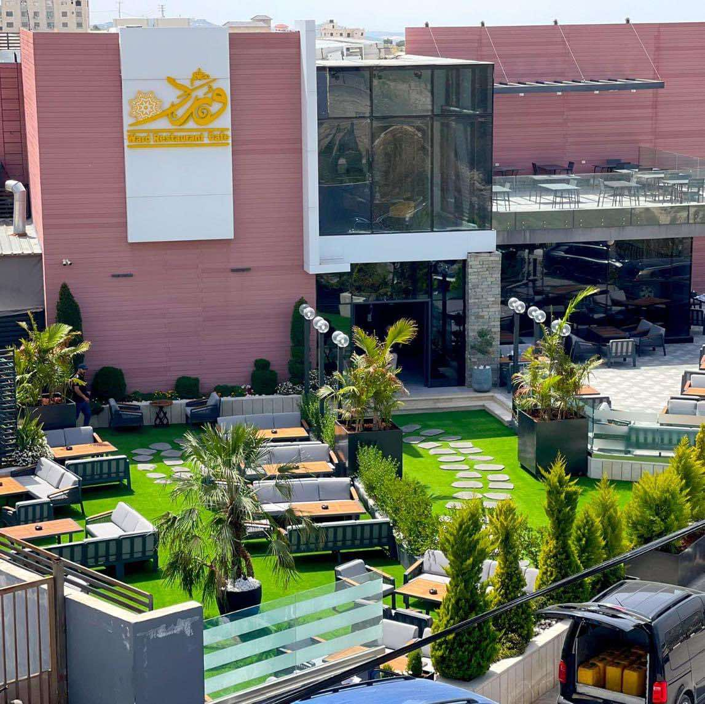

Ward Restaurant and Café is located in the Beit Wazan area in the city of Nablus and is famous for its distinctive seating and spacious spaces, in addition to the presence of an outdoor balcony overlooking the beautiful city views. It serves many Arabic and European dishes and cuisine, including grills, fish, pasta, pizza, and sandwiches, in addition to various drinks and distinctive desserts, so do not miss visiting it.
